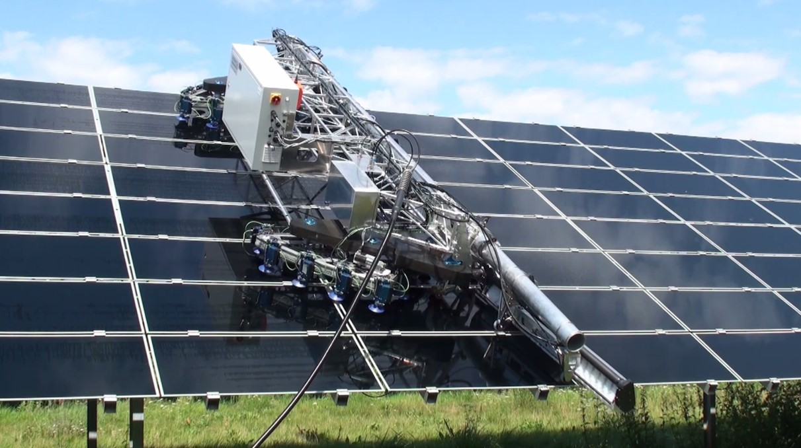

Robot GEKKO Solar está diseñado para limpiar paneles fotovoltaicos en tejados y parques solares, a los que es difícil acceder. Es compacto y versátil y se puede mover fácilmente de un lugar a otro. Por lo tanto, es el más adecuado para empresas de limpieza, ofreciendo su servicio a los propietarios de plantas fotovoltaicas.
El robot-eficiencia alcanza hasta 400 m2 por hora. Es una buena opción para instalaciones de techo extendido, donde la limpieza a mano no es factible.
El GEKKO Solar limpia rigurosamente girando los cepillos, ejecutando una presión constante sobre los paneles y el uso de agua desmineralizada.

El GEKKO Solar se suele utilizar junto con una plataforma de trabajo móvil: desde aquí, el operador puede levantar el robot cómodamente hasta el techo y controlarlo por radio con un joystick.
Hay un carrito pequeño para agua y un suministro de energía con una manguera de unos 100 m de longitud.
GEKKO Solar también es adecuado para pequeñas granjas solares con paneles estrechos. En este caso, un vagón de apoyo que suministra agua, energía eléctrica y aire presurizado garantiza un funcionamiento independiente.